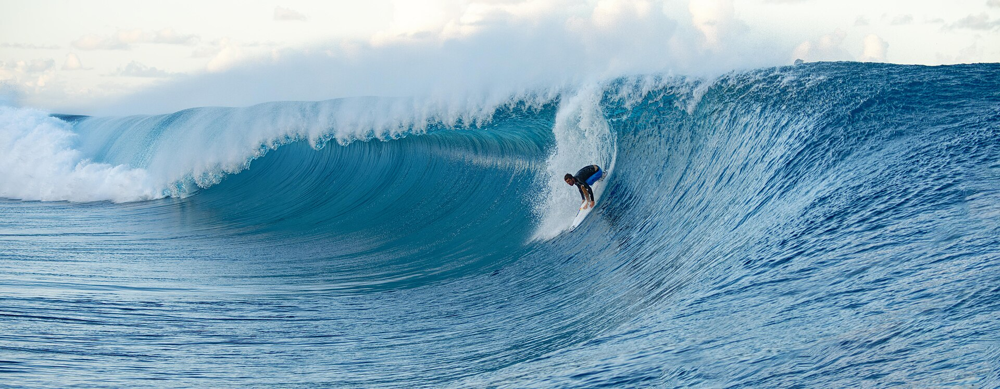

O Championship Tour da World Surf League retorna neste sábado, 8 de agosto, em um dos cenários mais aguardados e temidos do surfe mundial. O Outerknown Tahiti Pro Presented by I-SEA terá uma janela competitiva confirmada até 18 de agosto.
As baterias iniciais já foram divulgadas. O novo formato do Championship Tour faz com que apenas parte dos atletas dispute o Round 1. No masculino, os surfistas de menor posição entre os cabeças de chave e os convidados entram em quatro confrontos eliminatórios. Os vencedores avançam ao Round 2, fase na qual os principais nomes da classificação já estão posicionados. No feminino, oito baterias abrem o evento, e as vencedoras encontram as oito melhores cabeças de chave na rodada seguinte.
A combinação entre uma chave repleta de confrontos importantes, a participação de Kelly Slater como convidado e a previsão de mar muito grande cria a expectativa de uma abertura histórica. No entanto, a presença de ondas gigantes não garante automaticamente a realização das baterias: a direção e a intensidade do vento deverão ter peso decisivo nas chamadas da organização.
Início de competição
A primeira chamada será na abertura do evento, 8 de agosto, às 7h30 no horário do Taiti. Como Teahupo’o está sete horas atrás de Brasília, isso corresponde às 14h30 no horário brasileiro. A WSL poderá confirmar a competição, adiar o começo ou marcar uma nova avaliação, dependendo das condições observadas do mar.
Em Teahupo’o, tamanho de onda, vento, intervalo entre as séries, segurança dos atletas e condições de resgate são analisados antes da autorização para o início.
O swell estará presente. A principal dúvida é se o mar estará suficientemente regular para permitir uma competição segura e tecnicamente justa.
Previsão aponta ondas muito grandes
Os modelos disponíveis indicam uma ondulação consistente já para a abertura da janela. A previsão publicada antes do evento aponta ondas entre três e quatro metros no sábado, com séries que podem chegar perto de cinco metros. O domingo, 9 de agosto, aparece como o dia potencialmente mais pesado, com possibilidade de séries superiores a seis metros.
A previsão oficial para o evento, trabalha com séries de aproximadamente 15 a 18 pés no momento mais forte do swell, além da possibilidade de ondas ocasionais chegando aos 20 pés. Isso representa aproximadamente 4,5 a 5,5 metros, com séries isoladas perto de 6,1 metros. A tendência indicada é de perda gradual de tamanho na segunda-feira, 10 de agosto, embora Teahupo’o ainda possa continuar quebrando na bancada externa.
Previsão para os primeiros dias:
- Sábado, 8 de agosto: ondas entre três e quatro metros, com séries maiores chegando perto dos cinco metros.
- Domingo, 9 de agosto: provável auge da ondulação, de 15 a 18 pés e possibilidade de séries ocasionais próximas dos 20 pés.
- Segunda-feira, 10 de agosto: diminuição gradual do tamanho, mas com energia ainda presente na bancada externa.
- Terça e quarta-feira, 11 e 12 de agosto: possibilidade de combinação mais favorável entre tamanho de onda e vento, dependendo da evolução do swell.
Vento pode dificultar a abertura
O principal problema da previsão não está relacionado à falta de ondas. A preocupação é o vento predominante de sudeste, conhecido localmente como Maraamu. Quando sopra com intensidade, ele pode deixar a superfície do mar irregular, dificultar a entrada nos tubos e tornar a navegação das equipes de segurança mais delicada.
Esse cenário cria uma decisão complexa para a WSL. O sábado pode oferecer tamanho suficiente para competir, mas com qualidade afetada pelo vento. O domingo pode receber as maiores ondas da sequência, porém com condições ainda mais exigentes. Entre terça e quarta-feira, o swell deverá estar menor, mas existe a possibilidade de uma superfície mais organizada.
A previsão meteorológica geral aponta temperaturas máximas próximas dos 26 graus durante os primeiros dias, com chuvas isoladas no sábado e pancadas no domingo. Segunda-feira também pode registrar chuva fraca, enquanto terça tem maior possibilidade de períodos chuvosos.
A confirmação das baterias aumenta ainda mais o peso esportivo da etapa. O Tahiti Pro 2026 chega com brasileiros na disputa pela liderança e Kelly Slater de volta a Teahupo’o, em uma janela que reúne pressão no ranking, confrontos eliminatórios e expectativa de mar gigante no reef taitiano.
Baterias confirmadas
O Round 1 masculino terá quatro confrontos diretos:
- Ramzi Boukhiam, do Marrocos, x Oscar Berry, da Austrália
- Luke Thompson, da África do Sul, x Matthew McGillivray, da África do Sul
- Seth Moniz, do Havaí, x Eimeo Czermak, do Taiti
- Eli Hanneman, do Havaí, x Kelly Slater, dos Estados Unidos
O confronto entre Hanneman e Slater concentra grande parte das atenções. Cinco vezes campeão em Teahupo’o, Slater retorna à elite como convidado e tenta transformar sua experiência no reef em vantagem. Quem vencer encontrará Gabriel Medina no Round 2, criando a possibilidade de um duelo entre dois dos maiores especialistas em tubos da história do circuito.
Outro confronto importante reúne Seth Moniz e o local Eimeo Czermak. Eimeo conquistou sua vaga ao vencer as seletivas taitianas e fará sua primeira participação em uma etapa do Championship Tour. A familiaridade com Teahupo’o pode pesar especialmente se a competição começar em condições grandes.
Os brasileiros entram diretamente no Round 2. Os confrontos confirmados são:
- Samuel Pupo x Alan Cleland
- Yago Dora x vencedor de Seth Moniz e Eimeo Czermak
- Filipe Toledo x Connor O’Leary
- Ítalo Ferreira x vencedor de Luke Thompson e Matthew McGillivray
- João Chianca x Morgan Cibilic
- Alejo Muniz x Kanoa Igarashi
- Gabriel Medina x vencedor de Eli Hanneman e Kelly Slater
- Miguel Pupo x Mateus Herdy
A última bateria garante uma eliminação brasileira logo na estreia dos dois. Miguel chega respaldado pelo título conquistado em Teahupo’o em 2022, enquanto Herdy terá pela frente um adversário com experiência comprovada em baterias decisivas nos tubos taitiano.
Ítalo Ferreira, campeão da etapa em 2024, aguardará o vencedor do confronto sul-africano entre Luke Thompson e Matthew McGillivray. Gabriel Medina também depende do Round 1 para conhecer seu adversário, com a possibilidade de enfrentar Kelly Slater caso o norte-americano supere Eli Hanneman.
Baterias confirmadas do Round 1 feminino
- Sally Fitzgibbons x Anat Lelior
- Tya Zebrowski x Erin Brooks
- Isabella Nichols x Vahine Fierro
- Stephanie Gilmore x Yolanda Hopkins
- Alyssa Spencer x Bella Kenworthy
- Bettylou Sakura Johnson x Brisa Hennessy
- Nadia Erostarbe x Francisca Veselko
- Tyler Wright x Kelia Gallina (waves.com.br)
A bateria entre Isabella Nichols e Vahine Fierro aparece entre as mais aguardadas. Campeã em Teahupo’o em 2024, Vahine é uma das maiores conhecedoras da onda e normalmente cresce quando o reef recebe ondulações mais fortes. Outro destaque é Kelia Gallina, local de apenas 13 anos que venceu novamente as seletivas e disputará a etapa principal pelo segundo ano consecutivo.
Única representante brasileira no feminino, Luana Silva está classificada diretamente para o Round 2. Sua primeira adversária será a vencedora do confronto entre a oito vezes campeã mundial Stephanie Gilmore e a portuguesa Yolanda Hopkins.
Transmissão: plataformas oficiais da World Surf League, incluindo site, aplicativo e canal da entidade no YouTube
O Tahiti Pro começará com todos os elementos que transformaram Teahupo’o em um dos eventos mais emblemáticos do esporte: atletas especialistas em tubos, convidados locais perigosos, confrontos decisivos e uma ondulação de grande porte avançando sobre a bancada rasa de coral.
As baterias estão definidas, agora, a decisão mais importante pertence ao oceano. A quantidade de ondas não será problema; a organização precisará identificar o momento em que tamanho, vento e segurança se alinhem para permitir que os melhores surfistas do mundo enfrentem Teahupo’o em sua versão mais poderosa.